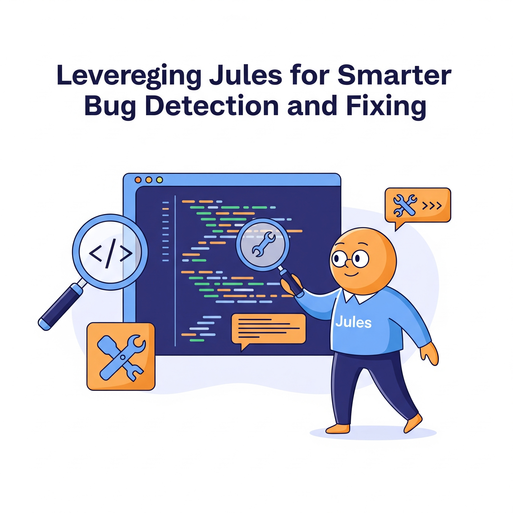

Leveraging Jules for Smarter Bug Detection and Fixing

Key Takeaways
- Google Jules revolutionizes bug detection with AI-powered testing
- Predictive analytics and self-healing tests reduce manual effort
- Real-world applications show significant improvements in bug detection
- Integration with existing workflows enhances QA efficiency
In the fast-paced world of software development, detecting and fixing bugs efficiently is crucial to delivering high-quality applications. Traditional bug detection methods often rely on manual processes or basic automation tools, which can be time-consuming, error-prone, and resource-intensive. Enter Google Jules, an AI-powered testing assistant that is transforming how QA engineers approach bug detection and resolution. By leveraging advanced machine learning (ML), natural language processing (NLP), and predictive analytics, Jules enables smarter, faster, and more accurate bug detection and fixing.
In this blog post, we'll explore how Google Jules revolutionizes bug detection and fixing, its key features, real-world applications, and actionable insights for QA professionals looking to harness its full potential.
The Challenges of Traditional Bug Detection and Fixing
Before diving into how Google Jules addresses these challenges, let's first examine the pain points of traditional bug detection and resolution:
- Manual Effort: Identifying bugs often requires extensive manual testing, which slows down the development cycle.
- Missed Edge Cases: Human testers may overlook rare but critical scenarios, leading to undetected defects.
- Delayed Feedback Loops: Bugs identified late in the development process are more expensive and time-consuming to fix.
- High Maintenance Overhead: Updating test scripts to reflect application changes adds unnecessary complexity.
- Root Cause Analysis: Diagnosing the underlying cause of a bug can be a tedious and iterative process.
These challenges highlight the need for smarter tools that can streamline bug detection and resolution—tools like Google Jules.
What is Google Jules?
Google Jules is an AI-driven testing platform designed to enhance quality assurance processes by automating repetitive tasks, predicting potential issues, and providing actionable insights. While it excels in test case generation and execution, its capabilities extend far beyond that. Jules leverages advanced AI algorithms to detect bugs earlier, prioritize fixes based on impact, and even suggest resolutions—all while reducing the burden on human testers.
Key features of Jules include:
- Predictive Bug Detection: Anticipates where bugs are likely to occur based on historical data and code analysis.
- Self-Healing Tests: Automatically updates test scripts when UI elements or APIs change, ensuring tests remain functional.
- Root Cause Analysis: Pinpoints the exact source of failures, reducing debugging time.
- AI-Assisted Recommendations: Provides intelligent suggestions for resolving identified issues.
By combining these capabilities, Jules transforms bug detection and fixing into a proactive, efficient, and collaborative process.
How Jules Enhances Bug Detection
1. Predictive Analytics for Proactive Bug Identification
Jules uses predictive analytics to identify potential vulnerabilities before they manifest as bugs. By analyzing:
- Code complexity
- Historical defect patterns
- Usage trends
Jules flags high-risk areas that are prone to failure, enabling teams to address issues proactively. For example:
- If a module has a history of memory leaks, Jules highlights it for additional scrutiny during testing.
- If certain API endpoints frequently fail under load, Jules recommends stress-testing those endpoints.
This proactive approach reduces the likelihood of bugs slipping into production.
2. Comprehensive Test Coverage
Jules ensures that test cases cover both common and edge-case scenarios. Using ML algorithms, it:
- Identifies untested code paths through static and dynamic analysis.
- Generates test cases for edge cases that might otherwise be overlooked.
- Validates inputs, outputs, and intermediate states to ensure robust functionality.
For instance, if a login form accepts special characters, Jules creates test cases to validate how the system handles such inputs.
3. Real-Time Monitoring and Alerts
Jules integrates seamlessly into CI/CD pipelines, providing real-time feedback during development. Key benefits include:
- Immediate alerts when tests fail, allowing developers to address issues before merging code.
- Continuous monitoring of application performance and behavior in staging environments.
- Automated reporting of anomalies, such as unexpected spikes in latency or resource usage.
This real-time visibility ensures that bugs are caught early and resolved quickly.
How Jules Streamlines Bug Fixing
1. Intelligent Root Cause Analysis
One of the biggest challenges in bug fixing is identifying the root cause of a failure. Jules simplifies this process by:
- Analyzing stack traces, logs, and test results to pinpoint the source of errors.
- Using anomaly detection and tracing back to specific lines of code.
- Highlighting dependencies and interactions that may contribute to the issue.
For example, if a database query fails, Jules identifies whether the problem lies in the query itself, the schema design, or the connection logic.
2. AI-Assisted Recommendations
Once a bug is identified, Jules provides actionable recommendations for resolving it. These suggestions are based on:
- Best practices derived from vast datasets of similar issues.
- Insights from successful resolutions in other projects.
- Contextual understanding of the application's architecture and requirements.
For instance, if a memory leak is detected, Jules might recommend optimizing garbage collection or refactoring inefficient code blocks.
3. Automated Regression Testing
After a bug is fixed, Jules ensures that the solution doesn't introduce new issues by running automated regression tests. It:
- Verifies that existing functionality remains intact.
- Checks for side effects in related modules or components.
- Updates test suites to reflect any changes made during the fix.
This eliminates the risk of regressions and ensures long-term stability.
Real-World Use Cases
1. Accelerating Agile Development
A SaaS company using Jules integrated it into their agile workflow to catch bugs earlier in the sprint cycle. Results included:
- 60% reduction in post-release defects.
- Faster feedback loops, enabling developers to resolve issues within the same sprint.
- Increased confidence in releasing features on time.
2. Enhancing API Testing
An e-commerce platform leveraged Jules to improve API reliability. Key outcomes were:
- Automated detection of API endpoint failures under heavy traffic.
- Proactive identification of security vulnerabilities, such as SQL injection risks.
- Reduced downtime due to faster resolution of API-related bugs.
3. Improving Mobile App Stability
A mobile app development team used Jules to enhance app stability across devices. Benefits included:
- Detection of device-specific bugs, such as crashes on older Android versions.
- Optimization of battery and memory usage through targeted testing.
- Higher user satisfaction scores due to fewer crashes and glitches.
Why Jules is a Game-Changer for QA Teams
Google Jules offers numerous advantages that make it indispensable for modern QA teams:
- Faster Feedback Loops: Automates testing and bug detection, enabling quicker resolution of issues.
- Improved Accuracy: Minimizes human error and ensures comprehensive coverage.
- Reduced Maintenance Overhead: Self-healing tests adapt to changes without manual intervention.
- Cost Efficiency: Catches bugs earlier, reducing the cost of fixing them post-release.
- Scalability: Handles large-scale applications with ease, ensuring consistent quality across modules.
By empowering QA teams to work smarter, not harder, Jules elevates the role of testers from bug hunters to quality strategists.
Tips for Maximizing Jules' Potential
To fully leverage Jules for smarter bug detection and fixing, consider the following best practices:
- Integrate Early in the SDLC: Incorporate Jules into your development pipeline to catch bugs as soon as code is written.
- Collaborate Across Teams: Share insights generated by Jules with developers, product owners, and stakeholders to foster a culture of quality.
- Upskill Your Team: Train QA engineers on interpreting AI-generated reports and implementing Jules' recommendations effectively.
- Monitor Trends: Use Jules' analytics dashboards to track recurring issues and prioritize areas for improvement.
- Combine with Exploratory Testing: Pair Jules' automated capabilities with human intuition to uncover hidden defects.
Conclusion: The Future of Bug Detection and Fixing
Google Jules represents a significant leap forward in how QA teams approach bug detection and fixing. By combining predictive analytics, intelligent automation, and actionable insights, it empowers teams to deliver higher-quality software faster and more efficiently than ever before.
For QA professionals, embracing Jules isn't just about adopting a new tool—it's about reimagining the role of quality assurance in the age of AI. As software development continues to evolve, tools like Jules will play an increasingly vital role in shaping the future of testing.
Are you ready to harness the power of Google Jules for smarter bug detection and fixing? Share your thoughts or questions in the comments below. Let's discuss how this revolutionary tool can elevate your QA processes!
Join Our Community of QA Professionals
Get exclusive access to in-depth articles, testing strategies, and industry insights. Stay ahead of the curve with our expert-curated content delivered straight to your inbox.
Nikunj Mistri
Founder, QA Blogs
About the Author